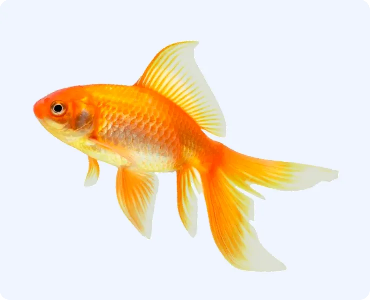

Рыба для пруда
Карась комета (вуалевый)
Цена и наличие
- 5-8 см17 BYN / шт.В наличии
- 8-12 см33 BYN / шт.В наличии
- 12-20 см45 BYN / шт.В наличии
- 20-25 см90 BYN / шт.В наличии
Данные на 23.11.2026.
Характеристики
- Внешний вид
- Имеет овальное, высокое тело и длинный вуалевый хвост
- Сезонность
- Круглый год
- Возраст
- Сеголетки, годовики
- Максимальный вес
- До 1.6 кг
- Продолжительность жизни
- Обычно 10–20 лет при хорошем содержании. При благоприятных условиях отдельные золотые рыбки способны жить значительно дольше
- Половая зрелость
- Обычно наступает в возрасте 1–2 лет, однако срок созревания зависит от температуры воды, кормления, скорости роста и сезонного режима содержания
- Питается
- Вуалевый карась-комета — всеядная рыба. В естественном пруду питается зоопланктоном, личинками водных насекомых, мелкими ракообразными и другими беспозвоночными, а также водорослями, мягкими частями растений и органическим детритом. При содержании в декоративном пруду рацион дополняют полноценными кормами для золотых рыбок
- Температура воды для активного питания и размножения
- Наиболее активно питается и растет примерно при 18–24 °C. Нерест обычно происходит весной при постепенном прогреве воды примерно до 18–24 °C. Для нормального репродуктивного цикла полезно естественное сезонное охлаждение воды зимой
- Условия пруда для содержания
- Лучше всего подходит просторный пресноводный пруд со стоячей или медленно движущейся водой, хорошей фильтрацией и аэрацией. Необходимо свободное пространство для плавания, безопасные участки с растительностью и достаточно глубокая незамерзающая зона для зимовки. Из-за удлиненных плавников желательно избегать острых камней, жестких декораций и слишком сильного постоянного течения
- Рост
- Сеголетки 5-10 г, двухлетки 15-30 г, трехлетки 30-60 г
Описание
Вуалевые караси кометы, они же золотые рыбки, прекрасно украсят ваш пруд и будут радовать своим присутствием на протяжении долгих лет!
УСЛОВИЯ ОБИТАНИЯ
Вуалевый карась-комета — декоративная длинноплавничная форма золотой рыбки (Carassius auratus), предназначенная прежде всего для содержания в садовых и декоративных прудах. Рыба отличается яркой окраской, активным поведением и удлиненными плавниками, благодаря которым хорошо заметна при наблюдении с поверхности. Кометы относятся к активным золотым рыбкам и нуждаются в свободном пространстве для плавания. Для содержания подходит стоячая или медленно движущаяся вода без сильного постоянного потока. Водоем желательно оборудовать биологической фильтрацией и аэрацией, поскольку золотые рыбки активно питаются и создают заметную органическую нагрузку на воду. В пруду полезно сочетать открытые участки для свободного плавания с зонами водной растительности. Растения дают укрытия молоди и создают естественную среду, однако рыбы могут объедать мягкие побеги и перекапывать грунт во время поиска корма. Все элементы декора желательно выбирать без острых краев. Длинные плавники могут повреждаться о камни, жесткие пластиковые элементы и другое оборудование, поэтому безопасное оформление пруда особенно важно для длинноплавничных рыб. Вуалевый карась-комета — мирная рыба и хорошо содержится группой с другими золотыми рыбками сходного размера. Хорошими соседями являются обычные кометы, шубункины и другие активные холодноводные декоративные формы. Содержание с хищной рыбой нежелательно, особенно если кометы еще небольшие.
РАЗМНОЖЕНИЕ
Вуалевые караси-кометы способны самостоятельно размножаться в открытом пруду. Нерест обычно происходит весной после зимнего периода, когда продолжительность светового дня увеличивается, а вода постепенно прогревается. Во время нереста самцы активно преследуют самок среди водной растительности и на мелководных участках. Специальных гнезд золотые рыбки не строят. Оплодотворение наружное: самка выметывает икру, а самцы одновременно выделяют молоки. Икра мелкая и клейкая. Она прикрепляется к подводным растениям, корням, нерестовым щеткам и другим погруженным поверхностям. Самка способна выметывать икру несколькими порциями в течение нерестового периода. Родительской заботы у золотых рыбок нет. После нереста взрослые особи могут поедать собственную икру и появившихся мальков, поэтому при целенаправленном разведении производителей или субстрат с икрой после нереста отделяют. Оптимальная температура для развития икры находится примерно около 22 °C. В теплой воде личинки обычно появляются через несколько суток, после чего некоторое время используют запас желточного мешка, а затем переходят на самостоятельное питание мелким зоопланктоном и стартовыми кормами.
КОРМЛЕНИЕ
Вуалевый карась-комета — всеядная рыба с широким спектром естественного питания. В пруду она поедает мелких ракообразных, личинок водных насекомых, червей и других беспозвоночных, а также водоросли, мягкие части растений и органический детрит. Основу дополнительного рациона лучше составлять из полноценных кормов для золотых рыбок. Подходят качественные гранулированные или хлопьевидные корма соответствующего размера. Рацион может включать как животные, так и растительные компоненты. Интенсивность кормления напрямую зависит от температуры воды. В теплый период при температуре около 18–24 °C рыбы активно питаются и растут. Осенью по мере охлаждения воды обмен веществ замедляется, поэтому количество и частоту кормлений постепенно уменьшают. Перекармливание особенно нежелательно в пруду. Несъеденный корм и продукты жизнедеятельности увеличивают количество органики, ухудшают качество воды и повышают нагрузку на фильтрацию и кислородный режим. Рыбе следует давать такое количество корма, которое она активно съедает без накопления остатков.
ЗИМОВКА
Вуалевый карась-комета относится к холодноводным золотым рыбкам и при правильном содержании способен зимовать в открытом пруду в климатических условиях Беларуси. Лучше всего зимуют здоровые рыбы, которые постоянно содержались на улице и постепенно адаптировались к естественному осеннему снижению температуры. Пруд должен иметь достаточно глубокую незамерзающую зону и не промерзать полностью. С осенним охлаждением воды активность рыбы снижается, она перемещается в более глубокие и спокойные участки водоема, а обмен веществ и потребность в пище значительно уменьшаются. Золотые рыбки зимой не впадают в настоящую спячку, но становятся малоактивными. При устойчиво низкой температуре интенсивное кормление не требуется: количество корма постепенно сокращают по мере охлаждения воды и прекращают кормление, когда рыба перестает активно принимать пищу. Главную опасность зимой представляет не холод сам по себе, а недостаток растворенного кислорода и накопление продуктов разложения под ледяным покровом. Перед зимой желательно удалить избыток отмирающей растительности и органических остатков, а при необходимости использовать аэрацию для поддержания газообмена. При правильной подготовке пруда, достаточной глубине и стабильном кислородном режиме вуалевые караси-кометы могут круглогодично содержаться в открытом декоративном водоеме.